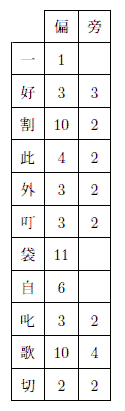

| 黒手組 | |
| 江戸川 乱歩 | |
| 青空文庫 (2016) | |
黒手組
江戸川乱歩
またしても明智小五郎の手柄話です。
それは、私が明智と知合になってから一年程たった時分の出来事なのですが、事件に一種劇的な色彩があって中々面白かったばかりでなく、それが私の身内のものの家庭を中心にして行われたという点で、私には一層忘れ難
いのです。
この事件で、私は、明智に暗号解読のすばらしい才能のあることを発見しました。読者諸君の興味の為に、彼の解いた暗号文というのを先ず冒頭に掲げて置きましょうか。
一度お伺いしたい〳〵と存じながらつい
好い折がなく失礼ばかり致して居ります
割合にお暖かな日がつゞきますのね是非
此頃にお邪魔させていただきますわ扨
日
外
は［＃「は」は「×」付き］
つまらぬ品物をお贈りしました処
御
叮嚀なお礼を頂き痛み入りますあの手提
袋は実はわたくしがつれ〴〵のすさびに
自
か［＃「か」は「×」付き］
ら拙
い刺繡
をしました物で却ってお
叱りを受けるかと心配したほどですのよ
歌の方は近頃はいかが？時節柄御身お大
切に遊ばして下さいまし
さよなら
これはある葉書の文面です。忠実に原文通り記して置きました。文字を抹消したところから各行の字詰に至るまで凡て原文のままです。
さてお話ですが、当時私は避寒旁々
少し仕事を持って、熱海
温泉のある旅館に逗留
していました。毎日幾度となく湯につかったり、散歩したり、寝転んだり、そしてその暇々
に筆を執
ったりして至極暢気
に日を送っていたのです、ある日のことでした。又しても一風呂あびて好い気持に暖まった身体を、日当りのいい縁側の籐椅子
に投げかけ、何気なくその日の新聞を見ていますと、ふと大変な記事が眼につきました。
当時都には「黒手組」と自称する賊徒
の一団が人もなげに跳梁
していまして、警察のあらゆる努力もその甲斐なく、昨日は某の富豪がやられた。今日は某の貴族が襲われたと、噂は噂を産んで、都の人心は兢々
として安き日もなかったのです。従って新聞の社会面なども、毎日毎日その事で賑っていましたが、今日とても「神出鬼没の怪賊云々
」という様な三段抜きの大見出しで相も変らず書立てています。併し私はそうした記事にはもう慣れっこになっていて別に興味を惹かれませんでしたが、その記事の下の方に、色々と黒手組の被害者の消息を並べた中に、小さい見出しで「××××氏襲わる」という十二三行の記事を発見して非常に驚きました。といいますのは、その××××氏はかく云う私の伯父だったからです。記事が簡単でよく分りませんけれど、何でも娘の富美子
が賊に誘拐され、その身代金として一万円を奪われたということらしいのです。
私の実家は極く貧乏で、私自身もこうして温泉場に来てまで筆稼ぎをしなければならぬ程ですが、伯父はどうして中々金持なのです。二三の相当な会社の重役なども勤めていますし、十分「黒手組」の目標になる資格はありました。日頃なにかと世話になっている伯父のことですから、私は何を措
いても見舞に帰らなければなりません。身代金をとられて了
うまで知らずにいたのは迂濶
千万です。きっと伯父の方では私の下宿へ電話位はかけていたのでしょうが、今度の旅行はどこへも知らせずに来ていましたので、新聞の記事になってから始めてこの不祥事を知った訳なのです。
そこで、私は早速行李
を纏
めて帰京しました。そして旅装を解くやいなや伯父の邸
へ出掛けました。行って見ますと、どうしたというのでしょう。伯父夫婦が仏壇の前で一心不乱に団扇
太鼓や拍子木を叩いて御題目を唱えているではありませんか。一体彼等の一家は狂的な日蓮宗
の信者で、一にも二にも御祖師様
なんです。ひどいのは、一寸
した商人でさえも、先ず宗旨
を確めた上でなければ出入を許さないという始末でした。併
しそれにしても、いつも御勤めをする時間ではないのにおかしなこともあるものだと思い、様子を聞きますと、驚いたことには、事件はまだ解決していないのでした。身代金は賊の要求通り渡したにも拘らず、肝心の娘が未
だに帰って来ないというのです。彼等が御題目を唱えていたのは、所謂苦しい時の神頼みで、御祖師様の御袖に縋
って娘を取戻して貰おうという訳だったのでしょう。
ここで一寸当時の「黒手組」の遣
り口
を説明して置く必要がある様です。あれからまだ数年にしかなりませんから、読者諸君の内には当時の模様を御記憶の方もあるでしょうが、彼等は極
った様に、先ず犠牲者の子女を誘拐し、それを人質にして巨額の身代金を要求するのです。脅迫状には、いつ何日の何時にどこそこへ金何円を持参せよと詳しく指定があって、その場所には「黒手組」の首領がちゃんと待構えています。つまり身代金は被害者から直接賊の手に渡されるのです。何と大胆なやり方ではありませんか。而
もそれでいて彼等には寸分の油断もありません。誘拐にしろ、脅迫にしろ、金円の受授にしろ、少しの手掛りも残さない様にやってのけるのです。又被害者が予
め警察に届出て、身代金を手渡す場所に刑事などを張込ませて置きますと、どうして察知するのか彼等は決してそこへやって来ません。そして後になってその被害者の人質は手ひどい目にあわされるのです。惟
うに今度の黒手組事件は、よくある不良青年の気まぐれなどではなくて、非常に頭の鋭い而
も極めて豪胆な連中の仕業
に相違ありません。
さてこの兇賊の御見舞を受けた伯父の一家では、今も云
います様に、伯父夫妻を始め蒼
くなってうろたえていました。一万円の身代金はとられる、娘は返して貰えないというのでは、流石
実業界では古狸
とまで云われている策士の伯父も、手のつけ様がないのでしょう。いつになく私の様な青二才を手頼
りにして何かと相談をする始末です。従妹
の富美子は当時十九の而も非常な美人でしたから、身代金を与えても戻さぬ所を見ると、ひょっとしたら無慚
にも賊の毒手に弄
ばれているのかも知れません。そうでなかったら、賊は伯父を組し易しと見て、一度では慊
たらず二度三度身代金を脅喝しようとしているのでしょう。何
れにしても伯父としてはこんな心配な事はありません。
伯父には富美子の外に一人の息子がありましたが、まだ中学へ入った許
りで力にはなりません。で、さしずめ私が、伯父の助言者という格で色々と相談したことですが、よく聞いて見ますと、賊のやり方は噂にたがわず実に巧妙を極めていて、何となく妖怪じみた凄い所さえあるのです。私も犯罪とか探偵とかいうことには人並以上の興味があり、「Ｄ坂の殺人事件」でも御承知の様に、時には自ら素人探偵を気取る程の稚気も持合せているのですから、出来ることなら一つ本職の探偵の向うを張ってやろうと、様々に頭を絞って見ましたものの、これは迚
も駄目です。てんで手懸りというものがないのですからね。警察へは勿論伯父から届け出てありましたけれど、果して警察の手でこれが解決出来ましょうか。少くとも今日までの成績で見ると、まず覚束
ないものです。
そこで、当然私は友達の明智小五郎のことを想出しました。彼なればこの事件にも何とか眼鼻をつけて呉れるかも知れません。そう考えますと、私は早速それを伯父に相談して見ました。伯父は一人でも余計に相談相手の欲しい際ではあり、それに私が日頃明智の探偵的手腕についてよく話をしていたものですから、尤も伯父としては大して彼の才能を信用してはいなかった様ですけれど、兎
も角
呼んで来て呉れということになりました。
私は御承知の煙草屋へ車を飛ばせました。そして、色々の書物を山と積上げた例の二階の四畳半で明智に逢いました。都合のよかったことには、彼は数日来「黒手組」についてあらゆる材料を蒐集し、丁度得意の推理を組立てつつある所でした。而も彼の口ぶりではどうやら何か端緒を摑
んでいる様子なのです。で、私が伯父のことを話しますと、そういう実例にぶッつかるのは願ってもないことだという訳で早速承諾して呉れ、時を移さず連立って伯父の家へ帰ることが出来ました。
間もなく、明智と私とは伯父の邸の数寄
を凝
した応接間で伯父と対座していました。伯母や書生の牧田
なども出て来て話に加わりました。この牧田というのは身代金手交の当日伯父の護衛役として現場へ同行した男なので、参考の為に伯父に呼ばれたのでした。
取込みの中で紅茶だ菓子だと色々のものが運ばれました。明智は舶来の接待煙草を一本つまんで、つつましやかに煙を吐いていましたっけ。伯父は如何にも実業界の古狸といった形で、生来大男の処
へ美食と運動不足の為にデブデブ肥
っていますので、こんな場合にも、多分に相手を威圧
する様な所を失いません。その伯父の両隣に伯母と牧田が坐っているのですが、これが又二人共瘦形
で、殊に牧田は人並はずれた小男ですから、一層伯父の恰幅
が引立って見えます。一通り挨拶がすみますと、事情は已
に私からざっと話してあったのですけれど、もう一度詳しく聞き度いという明智の希望で、伯父が説明を初めました。
「事の起りは、左様、今日から六日前、つまり十三日でした。その日の丁度昼頃、娘の富美が一寸友達の所までといって、着換えをして家を出たまま晩になっても帰らない。我々始め『黒手組』の噂に脅されている際でしたから、先ずこの家内が心配を始めましてね、その友達の家へ電話で問合せた処が、娘は今日は一度も行っていないという返事です。さあ驚いてね。判っている丈の友達の所へはすっかり電話をかけさせて見たが、どこへも寄っていない。それから、書生や出入りの車夫などを狩集めて八方捜索に尽しました。その晩はとうとう我々始め一睡もせずでしたよ」
「一寸御話中ですが、その時、お嬢さんがお出ましになる所を実際に見られた方がありましたでしょうか」
明智が尋ねますと、伯母が代って答えました。
「はあ、それはもう女共や書生などが確かに見たのだそうで御座います。殊
に梅と申す女中などは、あれが門を出る後姿を見送ってよく覚えていると申して居りますので......」
「それから後は一切不明なのですね。御近所の人とか通行人などで、お嬢さんのお姿を見かけたものもないのですね」
「そうです」と伯父が答えます。「娘は車にも乗らないで行ったのだから、若し知った人に行会
えば十分顔を見られる筈ですが、ここは御存じの通り淋しい屋敷町で、近所の人といってもそう出歩かない様だし、それは随分尋ね廻って見たのですが、誰一人娘を見かけたものがないのです。そういう訳で警察へ届けたものかどうだろうと迷っている所へ、その翌日の昼過ぎでした。心配していた『黒手組』の脅迫状が舞込んだのです。若しやと思っていたものの、実に驚かされました。家内などは手ばなしで泣き出す始末でね。脅迫状は警察へ持って行って今ありませんが、文句は、身代金一万円を、十五日午後十一時に、Ｔ原の一本松まで現金で持参せよ。持参人は必ず一人限
りで来ること、若し警察へ訴えたりすれば人質の生命はないものと思え......娘は身代金を受取った翌日返還する。ざっとまあこんなものでした」
Ｔ原というのは、あの都の近郊にある練兵場のＴ原のことですが、原の東の隅っこの所に一寸した灌木林があって、一本松はその真中に立っているのです。練兵場とはいい条
、その辺は昼間でもまるで人の通らぬ淋しい場所で、殊に今は冬のことですから一層淋しく、秘密の会合場所には持って来いなのです。
「その脅迫状を警察で検べた結果、何か手懸りでも見つかりませんでしたか」とこれは明智です。
「それがね、まるで手懸りがないというのです。紙はありふれた半紙だし、封筒も茶色の一重の安物で、目印もなにもない。刑事は、手跡
なども一向特徴がないといっていました」
「警視庁にはそういう事を検べる設備はよく整っていますから、先ず間違いはありますまい。で、消印はどこの局になっていましたでしょう」
「いや、消印はありません。というのは、郵便で送ったのではなく、誰かが表の郵便受函
へ投込んで行ったらしいのです」
「それを函から御出しになったのはどなたでしょう」
「私です」書生の牧田が頓狂
な調子で答えた。「郵便物は凡て私が取纏
めて奥様の所へ差出しますんで、十三日の午後の第一回の配達の分を取出した中に、その脅迫状が混って居りました」
「何者がそれを投込んだかという点も」伯父がつけ加えました。「附近の交番の巡査などにも尋ねて見たり、色々取調べたがさっぱり判らないのです」
明智はここで暫く考え込みました。彼はこれらの意味のない問答の中から、何物かを発見しようとして苦しんでいる様子でした。
「で、それからどうなさいました」やがて顔を上げた明智が話の先を促しました。
「わしは余程警察沙汰にしてやろうかと思いましたが、仮令一片のおどし文句にもせよ、娘の生命をとると云われては、そうもなり兼ねる。そこへ、家内もたって止めるものですから、可愛い娘には替えられぬと観念して、残念だが一万円出すことにしました。
脅迫状の指定は今も云う通り、十五日の午後十一時、Ｔ原の一本松までということで、わしは少し早目に用意をして、百円札で一万円白紙に包んだのを懐中し、脅迫状には必ず一人で来る様にとありましたが、家内が馬鹿に心配して勧めますし、それに書生の一人位連れて行ったって、まさか賊の邪魔にもなるまいと思ったので、若
しもの場合の護衛役としてこの牧田をつれて、あの淋しい場所へ出掛けました。笑って下さい。わしはこの年になって始めてピストルというものを買いましたよ。そしてそれを牧田に持たせて置いたのです」
伯父はそういって苦笑いをしました。私は当夜の物々しい光景
を想像して思わずふき出しそうになったのを、やっとこらえました。この大男の伯父が、世にもみすぼらしい小男の而も幾分愚鈍な牧田を従えて、暗夜の中をおずおずと現場へ進んで行った珍妙な様子が目に見えるようです。
「あのＴ原の四五町手前で自動車を降りると、わしは懐中電燈で道を照しながらやっと一本松の下までたどりつきました。牧田は、闇のことで見つかる心配はなかったけれど、なるべく樹蔭
を伝う様にして、五六間の間隔でわしのあとからついて来ました。御承知の通り一本松のまわりは一帯の灌木林で、どこに賊が隠れているやら判らぬので、可也気味が悪い。が、わしはじっと辛抱してそこに立っていました。さあ三十分も待ったでしょうかな。牧田、お前はあの間どうしていたっけかなあ」
「はあ、御主人の所から十間位もありましたかと思いますが、繁みの中に腹這いになって、ピストルの引金に指をかけて、じっと御主人の懐中電燈の光を見詰めて居りました。随分長うございました。私は二三時間も待った様な気がいたします」
「で、賊はどの方角から参りました」
明智が熱心に訊ねました。彼は少からず興奮している様子です。といいますのは、ソラ、例の頭の毛をモジャモジャと指でかき廻す癖が始ったので解ります。
「賊は原っぱの方から来た様です。つまり我々が通って行った路とは反対の側から現れたのです」
「どんな風をしていました」
「よくは判らなかったが、何でも真黒な着物を着ていた様です。頭から足の先まで真黒で、ただ顔の一部分丈が、闇の中にほの白く見えていました。それというのが、わしはその時賊に遠慮して懐中電燈を消して了ったのでね。だが、非常に背の高い男だったこと丈けは間違いない。わしはこれで五尺五寸あるのですが、その男はわしよりも二三寸も高かった様です」
「何か云いましたか」
「だんまりですよ。わしの前まで来ると、一方の手にピストルをさしむけながら、もう一方の手をぐっと突出したもんです。で、わしも無言で金の包みを手渡ししました。そして、娘の事を云おうとして、口をききかけると、賊の奴矢庭に人差指を口の前に立てて、底力の籠った声でシッと云うのです。わしは黙ってろという合図だと思って何も云いませんでした」
「それからどうしました」
「それっ限
りですよ。賊はピストルをわしの方に向けたまま、後じさりに段々遠ざかって行って林の中に見えなくなって了ったのです。わしは暫く身動きも出来ないで立ちすくんでいましたが、そうしていても際限がないので、後の方を振向いて小声で牧田を呼びました。すると、牧田は繁みからごそごそ出て来て、もう行きましたかとびくびくもので聞くのです」
「牧田さんの隠れていた所からも賊の姿は見えましたか」
「はあ、暗いのと樹が茂っていた為に、姿は見えませんでしたが、何かこう賊の跫音
のようなものを聞いたと思いますので」
「それからどうしました」
「で、わしはもう帰ろうというと、牧田が賊の足跡を検べて見ようというのです。つまりあとになって警察に教えてやれば非常な手懸りになるだろうという意見でね。そうだったね牧田」
「はあ」
「足跡が見つかりましたか」
「それがね」伯父は変な顔付をして云うのです。「わしはどうも不思議で仕様がないのですて。賊の足跡というものがないのです。これは決してわし達の見誤りではないので、昨日も刑事が検
べに行ったそうですが、淋しい場所で其後人も通らなかったと見え、わし達両人の足跡はちゃんと残っているのに、その外の足跡は一つもないということでした」
「ほう、それは非常に面白いですね。もう少し詳しく御話願えませんでしょうか」
「地面の現れているのは、あの一本松の真下の所丈けで、そのまわりには落葉が溜っていたり、草が生えていたりして、足跡はつかない訳ですが、その地面の現れている部分には、わしの下駄と牧田の靴の跡しか残っていないのです。ところが、わしの立っていた所へ来て金包を受取る為には、どうしたって賊はその足跡の残る様な部分へ立入っていなければならないのに、それがない。わしの立っていた地面から草の生えている所までは、一番短いので二間は十分あったのですからね」
「そこには何か動物の足跡の様なものはありませんでしたか」
明智が意味あり気に訊ねました。伯父はけげんな顔をして、
「え、動物ですって」
と聞返します。
「例えば、馬の足跡とか犬の足跡とかいう様なものです」
私はこの問答を聞いて、ずっと以前にストランド・マガジンか何かで読んだ一つの犯罪物語を想浮
べました。それはある男が、馬の蹄鉄
を足につけて犯罪の場所へ往復した為に、うまく嫌疑を免れたという話でした。明智もきっとそんな事を考えていたのに相違ありません。
「さあ、そこまではわしも気がつかなかったが、牧田お前覚えていないかね」
「はあ、どうもよく覚えませんですが、多分そんなものはなかった様でございます」
明智はここで又黙想を始めました。
私は最初伯父から話を聞いた時にも思ったことですが、今度の事件の中心は、この賊の足跡のないという点にあるのです。それは実に一種不気味な事実でした。
長い間沈黙が続きました。
「併し何は兎
もあれ」やがて又伯父が話し始めます。「これで事件は落着したのだとわしは大いに安心して帰宅しました。そして翌日は娘が帰って来るものと信じていました。偉い賊になればなる程、約束などは必ず守る、一種の泥坊道徳という様なものがあることを兼ねて聞及んでいたので、まさか噓は云うまいと安心しておりました。ところがどうでしょう、今日でもう四日目になるのに娘は帰って来ない。実に言語道断です。たまり兼ねてわしは昨日警察に委細を届出ました。けれども、警察はどうも、事件の多い中のことで、余り当にもなりません。丁度幸い甥があんたと御心安いというので実は大いに頼みにして御足労を願った様な次第で......」
これで伯父の話は終りました。明智は更に色々細い点について巧みな質問を発し、一つ一つ事実を確めて行きました。が、それらには別に御話する程の事柄もありません。
「ところで」明智は最後に訊ねました。「近頃お嬢さんの所へ、何か疑わしい手紙の様なものでも参っていないでしょうか」
これには伯母が答えました。
「私共では娘の所へ参りました手紙類は必ず一応私が目を通すことにして居りますので、怪しいものがあればじきに解る筈でございますが、左様でございますね、近頃別段これといって......」
「いや、極くつまらない様な事でも結構です。どうか御気附きの点を御遠慮なく御話し願い度いのですが」
明智は伯母の口調から何か感じたのでしょう、畳みかける様に訊ねました。
「でも、今度の事件には多分関係のないことでしょうと存じますが――」
「兎も角御話なすって見て下さい。そういう所に往々思わぬ手懸りがあるものです。どうか」
「では申上げますが、一月ばかり前から娘の所へ、私共の一向聞覚えのないお名前の方からちょくちょく葉書が参るのでございますよ。いつでしたか、一度私は娘に、これは学校時代の御友達ですかって聞いて見たことがございましたが、娘はええと答えはいたしましたものの、どうやら何か隠している様子なのでございます。私も妙に存じまして、一度よく訊
して見ようと考えています内に今度の出来事でございましょう。もうそんな些細
なことはすっかり忘れて居りましたのですが、お言葉でふと想出したことがございます。と申しますのは、娘がかどわかされます丁度前日に、その変な葉書が参っているのでございますよ」
「では、それを一度拝見願えませんでしょうか」
「よろしゅうございます。多分娘の手文庫の中にございましょうから」
そうして伯母は問題の葉書というのを探し出して来ました。見ると日附は伯母の云った通り十二日で、差出人は匿名なのでしょう、ただ「やよい」となっています。そして、市内の某局の消印が捺されていました。文面はこの話の冒頭に掲げて置きました「一度お伺い云々
」のあれです。
私もその葉書を手に取って十分吟味して見ましたが、何の変てつもない、如何にも少女らしい要でもない文句を並べたものに過ぎません。ところが、明智は何を思ったのか、さも一大事と言う調子で、その葉書を暫く拝借して行き度
いというではありませんか。勿論拒むべき事でもなく、伯父は即座に承諾しましたが、私には明智の考えがちっとも解らないのです。
こうして明智の質問は漸
く終りを告げましたが、伯父は待ち兼ねた様に彼の意見を問うのでした。すると、明智は考え考え次の様に答えました。
「いや、お話を伺った丈けでは別段これという意見も立ち兼ねますが、......兎も角やって見ましょう。ひょっとしたら、二三日の中にお嬢さんをお連れすることが出来るかも知れません」
さて、伯父の邸を辞した私達は、肩を並べて帰途についたことですが、その折、私が色々言葉を構えて明智の考えを聞き出そうと試みたのに対して、彼は唯、捜査方針の一端を握ったに過ぎないと答え、その所謂捜査方針については、一言も打開けませんでした。
その翌日、私は朝食をすませますと、直ぐに明智の宿を訪れました。彼がどんな風にこの事件を解決して行くか、その径路が知り度くてたまらなかったからです。
私は例の書物の山の中に埋没して得意の瞑想に耽
っている彼を想像しながら、心安い間柄なので、一寸煙草屋のお内儀
さんに声をかけて、いきなり明智の部屋への階段を上ろうとしますと、
「あら、今日はいらっしゃいませんよ。珍しく朝早くからどっかへ御出かけになりましたの」
といって呼止められました。驚いて行先を訊しますと、別に云い残してないということです。
さてはもう活動を始めたのかしら、それにしても朝寝坊の彼がこんな早くから外出するというのは余り例のないことだと思いながら、私は一先ず下宿へ帰りましたが、どうも気になるものですから、少し間を置いて二度も三度も明智を訪問したことです。ところが、何度行って見ても彼は帰っていないのです。そして、とうとう翌日の昼頃まで待ちましたが、彼はまだ姿を見せないではありませんか。私は少々心配になって来ました。宿のお内儀さんも非常に心配して明智の部屋に何か書残してないか検べて見たりしましたが、そういうものもありません。
私は一応伯父の耳に入れて置く方がいいと思いましたので、早速彼の邸を訪ねました。伯父夫妻は相変らずお題目を唱えて御祖師様を念じていましたが、事情を話しますと、それは大変だ。明智までも賊の虜になって了ったのではあるまいか。探偵を依頼したのだから、こちらにも十分責任がある。若しやそんなことがあったら明智の親許に対しても何とも申訳がないとあって、伯父を始め騒ぎ出すという始末です。私は明智に限って万々へまな真似はしまいと信じていましたが、こう周囲で騒がれては、心配しない訳には行きません。どうしようどうしようという内に時間がたつばかりです。
ところが、その日の午後になって、私達が伯父の家の茶の間へ集って小田原評定
をやっている所へ、一通の電報が配達されました。
フミコサンドウコウイマタツ
それは意外にも明智が総州
の千葉から打ったものでした。私達は思わず歓呼の声を上げました。明智も無事だ。娘も帰る。打ちしめっていた一家は俄に陽気にざわめいて、まるで花嫁でも迎える騒ぎです。
そうして、待兼ねた私達の前に、明智のニコニコ顔が現れたのは、もう日暮れ時分でした。見ると幾分面
やつれのした富美子が彼のあとに従っていました。兎も角疲れているだろうからという伯母の心遣いで、富美子丈けは居間に退き床についた様子でしたが、私達の前にはお祝
とあって、用意の酒肴
が運ばれる。伯父夫妻は明智の手を取らんばかりにして、上座に据え、お礼の百万遍
を並べる。それは大変でした。無理もありません。国家の警察力を以てしても、長い間どうすることも出来なかった「黒手組」です。いかに明智が探偵の名人だからといって、そう易々と娘が取戻せようとは、誰にしたって思いもかけなかったのです。それがどうでしょう。明智はたった一人の力でやってのけたではありませんか。伯父夫妻が凱旋
将軍でも迎える様に欵待
を尽したのは、ほんとうに尤
もなことです。彼はまあ何という驚くべき男なのでしょう。流石の私も、今度こそすっかり参って了いました。そこで、皆
がこの大探偵の冒険談を聞こうとつめよったものです。黒手組の正体は果して何者でしょう。
「非常に残念ですが、何も御話出来ないのです」明智が少し困った様な顔をして云いました。
「いくら私が無謀でも、単身であの兇賊を逮捕する訳には行きません。私は色々考えた結果、極くおだやかにお嬢さんを取戻す工風
をしたのです。つまり、賊の方から熨斗
をつけて返上させるといった方法ですね。で、私と『黒手組』との間にこういう約束が取交わされたのです。即ち、『黒手組』の方ではお嬢さんも身代金の一万円も返すこと、そして、将来ともお宅に対しては絶対に手出しをしないこと、私の方では、『黒手組』に関しては一切口外しないこと、そして、将来とも『黒手組』逮捕の助力など絶対にせぬこと、こういうのです。私としてはお宅の損害を恢復
しさえすれば、それで役目が済むのですから、下手にやって虻蜂
とらずに終るよりはと思って、賊の申出
を承知して帰った様な次第です。そういう訳ですから、どうかお嬢さんにも『黒手組』については一切お訊ね下さいません様に......で、これが例の一万円です。確かにお渡しします」
そう云って彼は白紙に包んだものを伯父に手渡しました。折角
楽しみにしていた探偵談を聞くことが出来ないのです。併し私は失望しませんでした。それは伯父や伯母には話せないかも知れませんが、いくら固い約束だからといって親友の私丈けには、打明けて呉れるだろう。そう考えますと、私は酒宴の終るのが待遠しくて仕様がありません。
伯父夫妻としては、自分の一家さえ安全なら、賊が逮捕されようとされまいと、そんなことは問題ではないのですから、ただもう明智への礼心で、賑かな杯
の献酬
が始められました。余り酒のいけぬ明智はじきに真赤になって了って、いつものニコニコ顔を更に笑みくずしています。罪のない雑談に花が咲いて、陽気な笑声が座敷一杯に拡がります。その席でどんなことが話されたか、それはここに記す必要もありませんが、ただ次の会話丈は一寸読者諸君の興味を惹
きはしないかと思います。
「いやもう、あんたは全く娘の生命の親です。わしはここで誓っときます。将来ともあんたのお頼みならどんな無理なことでもきっと承知するということをね。どうです。さし当り何か御望み下さることでもありませんかな」
伯父は明智に杯をさしながら、恵美須
様の様な顔をして云いました。
「それは有難いですね」
明智が答えます。
「例えばどうでしょう。私の友人のある男が、お嬢さんに大変こがれているのですが、その男にお嬢さんを頂戴するという様な望みでも構いませんでしょうか」
「ハハ......、あんたも却々
隅へ置けない。いや、あんたが先の人物さえ保証して下さりゃ、娘をさし上げまいものでもありませんよ」
伯父はまんざら常談でもない様子で云いました。
「その友人はクリスチャンなんですが、この点はどうでしょう」
明智の言葉は座興にしては少し真剣すぎる様に思われます。日蓮宗に凝り固まっている伯父は一寸いやな顔をしましたが、
「よろしい。わしは一体耶蘇教
は大嫌いですが、外
ならんあんたのお頼みとあれば、一つ考えて見ましょう」
「いや有難う。きっといつかお願いに上りますよ。どうか今のお言葉をお忘れない様に願います」
この一くさりの会話は、一寸妙な感じのものでした。座興と見ればそうとも考えられますが、真剣な話と思えば、又そうらしくもあるのです。ふと私は、バリモアの芝居では、あのシャーロック・ホームズが、事件で知合いになった娘と恋に陥り、遂に結婚する筋になっているのを思い出して、密かにほほ笑みました。
伯父はいつまでも引止めようとしましたが、余り長くなりますので、やがて私達は暇
を告げることにしました。伯父は明智を玄関まで送り出して、お礼の寸志だといいながら、彼が辞退するのも聞かないで、無理に二千円の金包を明智の懐
へ押し込みました。
「君、いくら『黒手組』との約束だって、僕に丈けは様子を話して呉れたっていいだろう」
私は伯父の家の門を出るのを待ち兼ねて、こう明智に問いかけたものです。
「ああ、いいとも」彼は案外た易く承知しました。「じゃ、コーヒでも飲みながら、ゆっくり話そうじゃないか」
そこで、私達は一軒のカフェーへ入り、奥まったテーブルを選んで席につきました。
「今度の事件の出発点はね。あの足跡のなかったという事実だよ」明智はコーヒを命じて置いて探偵談の口を切りました。
「あれには少くとも六つの可能な場合がある。第一は伯父さんや刑事が賊の足跡を見落したという解釈、賊は例えば獣類とか鳥類とかの足跡をつけて我々の目を欺瞞
することが出来るからね。第二は、これは少し突飛な想像かも知れないが、賊が何かにぶら下るか、それとも綱渡りでもするか、兎に角足跡のつかぬ方法で現場へやって来たという解釈、第三は伯父さんか牧田かが賊の足跡を踏み消して了ったという解釈、第四は偶然賊の履物
と伯父さん又は牧田の履物と同じだったという解釈、この四つは現場を綿密に検べて見たら分る事柄だ。それから第五は、賊が現場へ来なかった、つまり伯父さんが何かの必要から独芝居を演じたのだという解釈、第六は牧田と賊とが同一人物だったという解釈、この六つだ。
僕は兎も角現場を検べて見る必要を感じたので、あの翌朝早速Ｔ原へ行って見た。若しそこで第一から第四までの痕跡を発見することが出来なかったら、さしずめ第五と第六の場合が残るばかりだから、非常に捜査範囲を狭めることが出来る訳だ。ところがね、僕は現場で一つの発見をしたんだ。警察の連中は大変な見落しをやっていたのだよ。というのは、地面に沢山、何だかこう尖ったもので突いた様な跡があるんだ。尤もそれは皆伯父さん達の足跡（といっても大部分は牧田の下駄の跡）の下にかくれていて、一寸見たんでは判らないのだがね。僕はそれを見て種々想像を廻
している内に、ふとある事を想出した。天来の妙音
とでもいうか、実にすばらしい考えなんだよ。それはね、書生の牧田が小さな身体に似合わない太いメリンスの兵児帯
を、大きな結目を拵
えて締めているだろう。うしろから見ると一寸滑稽な感じを与えるね。僕は偶然あれを覚えていたんだ。これでもう僕には何もかも解って了った様な気がしたよ」
明智はこう云ってコーヒを一口舐めました。そして、何だかじらす様な目附をして私を眺めるのです。併し、私には残念ながらまだ彼の推理の跡を辿
る力がありません。
「で、結局どうなんだい」
私は口惜しまぎれに怒鳴りました。
「つまりね。先
き云った六つの解釈の内第三と第六とが当っているんだ。云い換えると書生の牧田と賊とが同一人物だったのさ」
「牧田だって」私は思わず叫びました。「それは不合理だよ。あんな愚な、それに正直者で通って居る男が......」
「それじゃね」明智は落着いて云うのです。「君が不合理だと思う点を一つ一つ云って見給え。答えるから」
「数え切れぬ程あるよ」私は暫
く考えてから云いました。
「第一伯父は賊が大男の彼よりも二三寸も背が高かったと云っている。そうすると五尺七八寸はあった筈だ。ところが牧田は反対にあんな小っぽけな男じゃないか」
「反対もこう極端になると一寸疑って見る必要があるよ。一方は日本人としては珍しい大男で、一方は畸形に近い小男だね。これは、如何にもあざやかな対照だ。惜しいことに少しあざやか過ぎたよ。若し牧田がもう少し短い竹馬を使ったら、却って僕は迷わされたかも知れない。ハハハハハハ分るだろう。彼はね。竹馬を短くした様なものを予め現場に隠して置いてそれを手で持つ代りに両足に縛りつけて用を弁じたんだよ。闇夜で而
も伯父さんからは十間も離れていたんだから、何をしたって判りゃしない。そして、賊の役目を勤めた後で、今度は竹馬の跡を消す為に、賊の足跡を調べ廻ったりなんかしたのさ」
「そんな子供瞞
し見たいなことを、どうして伯父が観破
出来なかったのだろう。第一賊は黒い着物だったというのに、牧田はいつも白っぽい田舎縞を着ているじゃあないか」
「それが例のメリンスの兵児帯なんだ。実にうまい考えだろう。あの大幅の黒いメリンスをグルグルと頭から足の先まで捲きつけりゃ、牧田の小さな身体位訳なく隠れて了うからね」
あんまり簡単な事実なので、私はすっかり馬鹿にされた様な気がしました。
「それじゃ、あの牧田が『黒手組』の手先を勤めていたとでも云うのかい。どうもおかしいね。黒手......」
「おや、まだそんな事を考えているのか、君にも似合わない、ちと今日は頭が鈍っている様だね。伯父さんにしろ、警察にしろ果ては君までも、すっかり、『黒手組』恐怖症にとッつかれているんだからね。まあ、それも時節柄無理もない話だけれど、若し君がいつもの様に冷静でいたら、何も僕を待つまでもなく、君の手で十分今度の事件は解決出来ただろうよ。これには『黒手組』なんてまるで関係ないんだ」
成程、私は頭がどうかしていたのかも知れません。こうして明智の説明を聞けば聞く程、却って真相が分らなくなって来るのです。無数の疑問が、頭の中でゴッチャになって、こんぐらがって、何から訊ねていいのか訳が分らない位です。
「じゃ、先刻
君は、『黒手組』と約束したなんて、なぜあんな出鱈目
を云ったのだい。第一分らないのは、若し牧田の仕業とすれば、彼を黙って抛
って置くのも変じゃないか。それから、牧田はあんな男で、富美子を誘拐したり、それを、数日の間も隠して置いたりする力がありそうにも思われぬし。現に富美子が家を出た日には、彼は終日伯父の邸にいて一歩も外へ出なかったというではないか。一体牧田見たいな男に、こんな大仕事が出来るものだろうか。それから......」
「疑問百出の態
だね。だがね、若し君がこの葉書の暗号文を解いていたら、少くともこれが暗号文だということを観破していたら、そんなに不思議がらないで済んだろうよ」
明智はこう云って、いつかの日伯父の所から借りて来た例の「やよい」という署名の葉書を取出しました。（読者諸君、甚
だ御面倒ですが、どうかもう一度冒頭のあの文面を読み返して下さい）
「若しもこの暗号文がなかったら、僕はとても牧田を疑う気になれなかったに相違ない。だから、今度の発見の出発点はこの葉書だったと云ってもいい訳だ。併しこれが暗号文だと最初からハッキリ解っていたのではない。ただ疑って見たんだ。疑った訳はね、この葉書が富美子さんのいなくなる丁度前日に来ていたこと、手跡がうまく真似てはあるがどうやら男らしいこと、富美子さんがこれについて聞かれた時妙なそぶりを示したことなどもあったが、それよりもね、これを見給え、まるで原稿用紙へでも書いた様に各行十八字詰めに実に綺麗に書いてある。が、ここへ横にずっと線を引いて見るんだ」
彼はそう云いながら、鉛筆を取出して、丁度原稿用紙の横線の様なものを引きました。
「こうするとよく分る。この線に沿ってずっと横に目を通して見給え、どの列も半分位仮名が混っているだろう。ところがたった一つ例外がある。それは、この一番始めの線に沿った各行の第一字目だ、漢字ばかりじゃないか。
一好割此外叮袋自叱歌切
「ね、そうだろう」彼は鉛筆でそれを横に辿りながら説明するのです。「これはどうも偶然にしては変だ。男の文章なら兎も角、全体として仮名の方がずっと多い女の文章に、一列だけ、こんなにうまく漢字の揃う筈がないからね。兎に角僕は研究して見る価値があると思ったのだ。あの晩帰ってから一生懸命考えた。幸、以前暗号については一寸研究したことがあるので、割合楽に解けたことは、解けたがね。一つやって見ようか。先ずこの漢字の一列を拾出して考えるんだ。併しこの儘ではチーハーの文句見たいで、一向意味がない。何か漢詩か経文
などに関係していないかと思って調べて見たが、そうでもない。色々やっている内に、僕はふと二字丈け抹消した文字のあるのに気附いた。こんなに綺麗に書いた文章の中に汚い消しがあるのは一寸変だからね。而もそれが二つ共第二字目なんだ。僕は自分の経験で知っているが、一体日本語で暗号文を作る時最も困るのは濁音、半濁音の始末だよ。でね、抹消文字は其上に位する漢字の濁音を示す為の細工じゃないかと考えたんだ。果してそうだとすると、この漢字は各々一字ずつの仮名を代表するものでなければならない。そこまでは比較的楽に行く。あとが大変だ。が、まあ苦心談は抜きにして、早速結論を示すことにしようね。つまりこれは漢字の字劃がキイなんだよ。それも偏と旁
を別々に勘定するんだ。例えば『好』は偏が三劃で旁が三劃だから３ ３という組合せになる。で、それを表にして見るとこうだ」
彼は手帳を出して左の様なものを書きました。

「この数字を見ると、偏の方は十一まで、旁の方は四までしかない。これが何かの数に符合しやしないか。例えばアイウエオ五十音をどうかいう風に配列した場合の順序を示すものであるまいか。ところが、アカサタナハマヤラワンと並べて見ると、その数は恰度
十一だ。こいつは偶然かも知れないが、まあやって見よう。偏の劃の数はアカサタナ即ち子音の順序を示し、旁の劃の数はアイウエオ即ち母音の順序を示すものと仮定するのだ。すると、『一』は一劃で旁がないからア行の第一字目即ち『ア』となり、『好』は偏が三劃だからサ行で、旁が三劃だから第三字目の『ス』だ。こうして当てはめて行くと、
アスヰチジシンバシヱキ
となる。『ヰ』と『ヱ』は当て字だろう。一劃の偏なんてないからア行では差支えるのでワ行を使ったのだ。果して暗号だった。ね、『明日一時新橋駅』この男却々暗号にかけては玄人
だよ。さて、年頃の女の所へ、暗号文で時間と場所を知らせて来る。而もそれがどうやら男の手跡らしい。この場合他に考え方があるだろうか。媾曳
の打合せと見る外にはね。そうなると、事件は、『黒手組』らしくなくなって来るじゃないか。少くとも『黒手組』を捜索する前に一応この葉書の差出人を取調べて見る必要があるだろう。ところが、葉書の主は富美子さんの外に知っている者がない。一寸難関だね。併し一度
これを牧田の行為と結付けて考えて見ると、疑問は釈然として氷解するのだよ、というのは、若し富美子さんが自分で家出をしたものとすれば、両親の所へ詫状（或は遺書
）の一本位寄越してもよさそうなものじゃないか。この点と、牧田が郵便物を取纏
める役目だということと結付けると、一寸面白い筋書きが出来るよ。つまりこうだ。牧田がどうかして富美子さんの恋を感づいていたとする。ああした不具者見たいな男のことで、その方の猜疑心
は人一倍発達しているだろうからね。で、彼は富美子さんからの手紙を握りつぶして、その代りに手製の『黒手組』の脅迫状を伯父さんの所へ差出したという順序だ。これは脅迫状が郵便で来なかった点にも当はまる」
明智はここで一寸言葉を切った。
「驚いた。だが......」
私が尚おも様々の疑点について訊
そうとすると、
「まあ待ち給え」彼はそれを押えつけて置いて続けました。「僕は現場を検べると、その足で伯父さんの邸の門前へ行って牧田の出て来るのを待伏せしていた。そして、彼が使にでも行くらしい風で出て来たのを、うまくごまかしてこのカフェーへ連れ込んだ。丁度今僕等が坐っているこのテーブルだったよ。僕は彼が正直者だことは、始めから君と同様に認めていたので、今度の事件の裏には何か深い事情が潜んでいるに相違ないと睨んでいた。でね、絶対に他言しないし、品
によっては相談相手になってやるからと安心させて、とうとう白状させて了ったのだ。
君は多分服部時雄
という男を知っているだろう。キリスト教信者だという理由で、富美子さんに対する結婚の申込を拒絶されたばかりでなく、伯父さんの所への御出入りまで止められて了った、あの気の毒な服部君をね。親というものは馬鹿なもので、流石の伯父さんも、富美子さんと服部君とがとうから恋中
だったことに気づかなかったのだよ。又富美子さんも富美子さんだ、何も家出までしないでも、可愛い娘のことだ。如何に宗教上の偏見があったって、出来て了ったものを今更ら無理に引離す伯父さんでもあるまいに、そこは娘心の浅薄
というようだ。それとも案外家出をして脅したら頑固な伯父さんも折れるだろうという横着な考えだったかも知れないが、いずれにしても二人は手に手をとって、服部君の田舎の友人の所へ駈落と洒落たのさ。無論そこから度々手紙を出したんだそうだ。それを牧田の奴一つ洩
らさず握りつぶしていたんだね。僕は千葉へ出張して、家では『黒手組』騒動が持上っているのも知らないで、只管
甘い恋に酔っている男女
を、一晩かかって口説
いたものだよ。あんまり感心した役目じゃなかったがね。で、結局きっと二人が一緒になれる様に取計
うという約束で、やっと引離して連れて来たのさ。だが、その約束もどうやら果せそうだよ。今日の伯父さんの口ぶりではね。
ところで、今度は牧田の方の問題だが、これもやっぱり女出入りなのだ。可哀そうに先生涙をぽろぽろ零
していたっけ。あんな男にも恋はあるんだね。相手が何者かは知らないが、恐らく商売人か何かにうまく持ちかけられたとでも云うのだろう。兎も角その女を手に入れる為に纏った金が入用
だったのだ。そして、聞けば富美子さんが帰って来ない内に出奔
する心算
でいたんだそうだ。僕はつくづく恋の偉力を感じた。あの愚しい男に、こんな巧妙なトリックを考えださせたのも、全く恋なればこそだよ」
私は聞き終って、ほっと溜息を吐
いたことです。何となく考えさせられる事件ではありませんか、明智も喋り疲れたのか、ぐったりとしています。二人は長い間黙って顔を見合せていました。
「すっかりコーヒが冷えて了った。じゃ、もう帰ろうか」
やがて明智は立上りました。そして、私達は各々の帰途についたのですが、分れる前に明智は何か想出した風で、先刻伯父から貰った二千円の金包を私の方へ差出しながら云うのです。
「これをね、序の時に牧田君にやって呉れ給え。婚資にと云ってね。君、あれは可哀そうな男だよ」
私は快く承諾しました。
「人生は面白いね。この俺が今日は二組の恋人の月下氷人
を勤めた訳だからね」
明智はそういって、心から愉快そうに笑うのでした。
底本：「江戸川乱歩全集 第1
巻 屋根裏の散歩者」光文社文庫、光文社
２００４（平成16
）年7
月20
日初版1
刷発行
２０１２（平成24
）年8
月15
日7
刷発行
底本の親本：「江戸川乱歩全集 第四巻」平凡社
１９３１（昭和6
）年8
月
初出：「新青年」博文館
１９２５（大正14
）年3
月
※「届出」と「届け出」、「富美」と「富美子」の混在は、底本通りです。
※底本巻末の編者による語注は省略しました。
入力：門田裕志
校正：岡村和彦
２０１６年9
月9
日作成
２０１６年11
月10
日修正
青空文庫作成ファイル：
このファイルは、インターネットの図書館、青空文庫（http://www.aozora.gr.jp/）で作られました。入力、校正、制作にあたったのは、ボランティアの皆さんです。